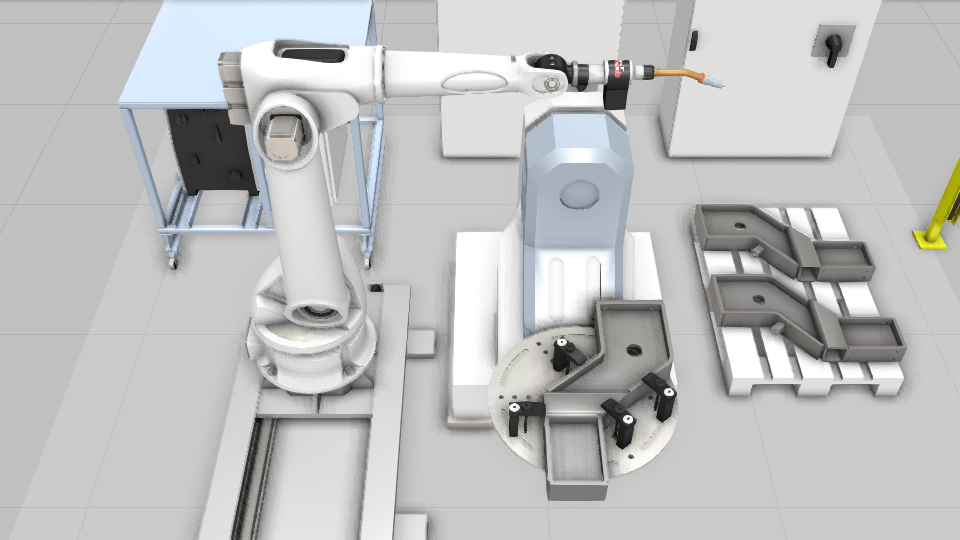
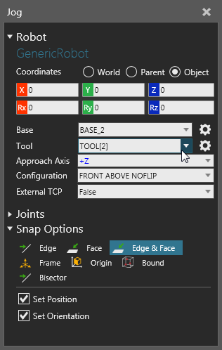
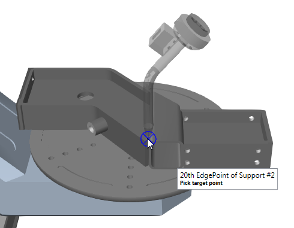
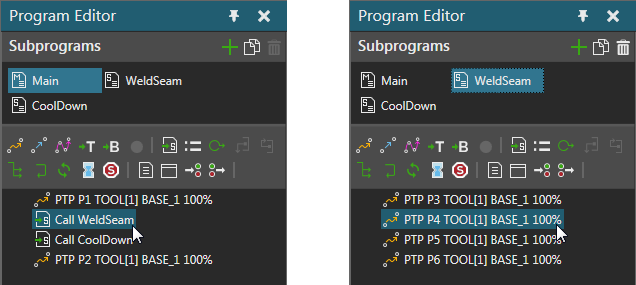

If you want to teach a robot in the 3D world, click the Program tab to access the Robot view.

If you want to interact with a robot and teach positions:
When the Jog command is active, you can use the Jog panel to configure a robot as well as edit settings for the robot's manipulator. For example, the Jog panel allows you to define the active TCP in a robot as well as snap filters for detecting and snapping a TCP to types of locations in the 3D world.

Note: The Snap and Align commands work the same as they do in Layout view, except that you are snapping the current robot's active TCP.

If you want to access and edit a robot program, use the Jog command to directly select a robot and display its program in the Program Editor panel. Statements in a robot program are nested in routines. Every robot has a Main routine that can be used to execute statements and call subroutines.

The program of a robot in the 3D world is automatically saved with a layout.